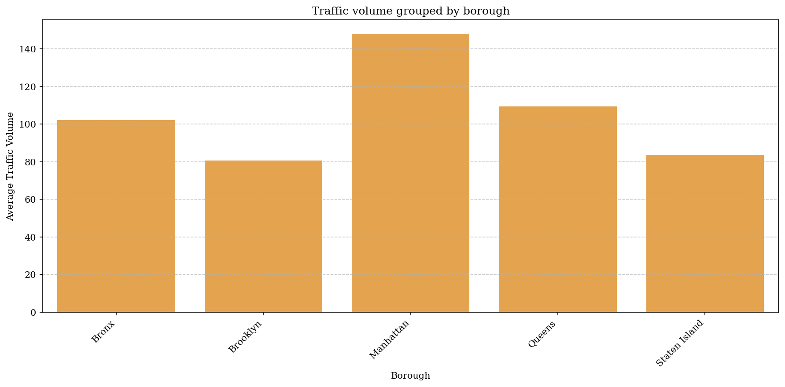
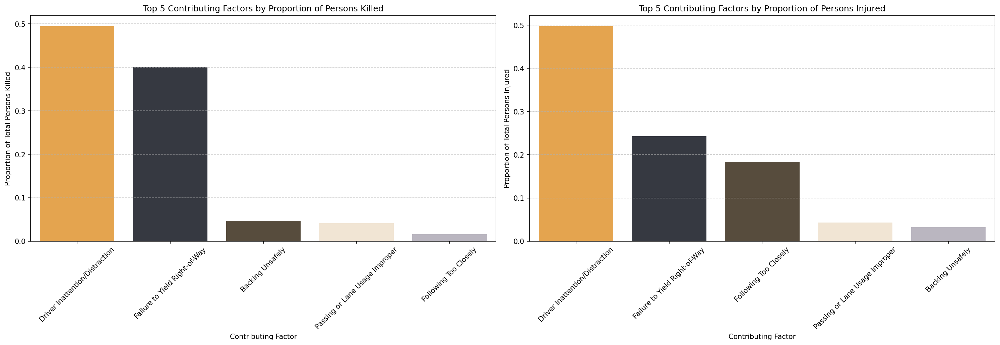

Foreign
Drivers in
New York
The Big Apple!
Okay so you figured out you have time and money to visit the Big Apple! Congratulations! Now that you have the trip planned — how are you getting around?
Scared of the infamous subway, you might feel tempted to rent a car or hop into a taxi. But before you do, here are some things to be aware of…
The last thing you want to get out of your vacation is getting into a car accident and according to data there is a lot of them!
Total vehicle collisions recorded in New York City
Looking at all the motor vehicle collisions reported in New York City what we see is a sea of incidents. Looking at it quickly, accidents seems to happen without rhyme or reason and it is almost virtually impossible to find an intersection anywhere across the city without at least one incident.
I mean look at it and try to find a crossing without any dots!
The figure shows all recorded vehicle collissions in New York city from 2012 and 2020.
You might think it is as simple as avoiding driving in a snowstorm — or avoiding driving when traffic volume is at its highest. But this is not enough!
We are here to equip you with the season-proof New York traffic hacks so that you know what to avoid and when.
What time of the year are you travelling?
Your answer changes what you need to watch out for — pick your season:
Cool cool cool cool — not exactly.
You prefer sweating around the big city for your well-deserved summer break? Well, bad news buddy! Apart from it being really hot in NYC in the summer, it is also in the summer months that most vehicle collisions occur.
Take a look at this graph — June and May are peak months for vehicle collisions. What else happens in June?
Monthly collision counts — note the June/May peak
Why summer spikes
- 01 Surge in tourism: You will probably not be the only foreigner on the street. Just like you, many opt for visiting New York in the summertime — more unfamiliar drivers, more chaos.
- 02 Younger drivers: Schools out. University students finish their exams mid-May and return in September. Young drivers are overrepresented in collision statistics — and more so during summer months.
- 03 Borough & severity breakdown: [Your content here — e.g. Manhattan vs. outer boroughs, speed limits, fatal vs. property damage accidents.]
Where and how severe summer collisions are distributed
Cold roads, cold stats — but not safer.
Visiting in winter? The good news: overall collision volume is lower than summer. The bad news: severity goes up — and the conditions are far less forgiving.
Collision frequency during winter months — storm day spikes
What you need to know for winter
- 01 Weather impact: [Insert snowstorm correlation data — peak collision days vs. storm days.]
- 02 Top three causes: [Insert top 3 contributing factors for winter collisions in NYC.]
- 03 Most dangerous borough: [Insert which borough sees the most severe winter incidents and why.]
- 04 Vehicle types & severity: [Insert data on which vehicle types are most involved — more property-only incidents, fewer fatalities, etc.]
Consider dropping the car if you are going to Manhattan
On average, Manhattan seems to be the busiest borough during the winter months, followed, not so closely, by Queens. Manhattan is a densely populated part of New York City and especially Christmas is one of the busiest times of the year in the city. Expect places like Rockefeller Center, Fifth Avenue and Sixth Avenue between 49th and 51st Street (all located in Manhattan) to be super packed and maybe not the most comfortable places to be moving around in a car.

The bar chart shows the average traffic volume from 2016–2022, grouped by borough.
Traffic volume is defined as the number of vehicles counted within 15-minute increments.
The average
traffic volume per borough is calculated by summing the annual traffic volumes for each borough across all years and
dividing by the number of years. Average traffic volume per borough is therefore:
traffic volume per borough 2012 + traffic volume per borough 2013 +...+ n / total traffic volume per borough
Be mindful of distractions
It is likely to imagine that slippery roads or snowstorms would be the top scoring contributing factors of car crashes in the winter months. Surprisingly, these contributing factors are not even in the top 3. Number one contributing factor to people getting involved in traffic collissions is the driver being distracted. This is actually not that strange when you think about it. In a city with 8 million citizens it is propably easy to get distracted on the road. So if you do decide to drive, make sure to stay focused on your driving, other people moving in traffic and last but not least, other drivers that might get distracted by the city's many impulses.

Top 3 contributing factors to vehicle collissions across New York City's five boroughs during the period 2016-2022.
What borough is the most dangerous in terms of traffic kills and injuries?
Even though we have seen that Manhattan is the borough with the largest average traffic volume, in the winter time, it does not seems to be the most dangerous of the five boroughs. Toggle the bar to jump between months to see which month and borough to be extra careful about.
Total kills and injuries for the period 2016-2022 grouped by borrow and months. Brooklyn is the month with the highest amount of affected road users across all five winter months. The highest average of killed and injured road users is in the month of December with an average of affected people on ~5100.
Brooklyn and Queens taking the lead regarding injured motorists
Brooklyn and Queens are the leading boroughs when it comes to injuries inflicted by vehicle collissions. November and December show the
highest amount of injuries and the biggest amount of injured people are in the category 'motorists'. An explanation for this can be that
more motorists end up getting involved in vehicle collissions in Brooklyn and Queens are suburbian areas where alot of citizens commute to
and from work by car.
Watch out for cyclists in Manhattan
Motorists seems to be the group of road users who occur most frequently when it comes to injuries across all months and boroughs. Motorists are followed by pedestrians who are also well represented in the group of injured road users. Cyclists also end up getting injured due to car collissions. The amount of injured cyclists are in Brooklyn and Manhattan is more or less the same, even though the total number og affected persons is ~5000 for Brooklyn and ~2000 according to the month in focus. This might mean that more people are biking in Manhattan, why you should look out for cyclists when you are navigating the busy streets of Manhattan in a car.
Amount of injuries per month for the period 2016-2022 across the five boroughs.
header
placeholder txt.
Amount of kills per month for the period 2016-2022 across the five boroughs.
What are the most common reasons for people getting injured or killed in the traffic in NYC?
Looking at the bar charts, the most common contributing factor to road users being killed or injured in the traffic in New York City is 'driver inattention/distraction'. As mentioned before, this is also the most frequent contributing factor to car collissions overall. The second most frequent contributing factor to both kills and injuries is 'failure to yield right of way'. The rate of persons killed due to this contributing factor is, however, higher when compared to injured persons. The fact that the amount of killed persons is higher, compared to amount of injured people, might be because 'failure to yield right of way' collissions often happen in intersections and affect pedestrians or cyclists crossing the street. The chance of getting killed in a collission as a 'soft' road user is ultimately higher.

Normalized count of of killed and injured traffic users grouped by contributing factor (change colors in figure)
header
placeholder txt.

bla bla bla
The bottom line
In general — avoid this and that. And remember: vehicle collisions happen without too much rhyme or reason. Even though there are seasonal patterns, there are so many incidents every year. Even though they spike in sync with snowstorms or during summer break, this does not mean you can relax on a regular Wednesday at 1 in the afternoon just because everyone around you looks 45.
What this data really shows is that vehicle collisions happen all the time, for reason or no reason at all. There are not many spots in New York where there has not been a vehicle collision in the past 20 years.
So if you are driving in New York: make sure you have insurance, stay updated on traffic rules — right of way, lane changes — and most importantly, do not get distracted by the towering skyscrapers around you.
Dive into the map
Explore why and where accidents happen across the five boroughs. Zoom in, filter by severity, and see which streets carry the most risk.
Explore collision data across New York City's five boroughs